Allis forceps，Allis clamp
即“爱丽丝创伤钳”，前端有一排细齿状小耙，一般用以夹持皮瓣，也可以用于筋膜和一些软组织等，因为可能会对组织造成一定的损伤，一般用以夹持将要被切除的组织，不易滑脱。而当用于钳夹子宫颈时（如放置子宫内避孕器时），其造成的出血要小于常用的宫颈钳。
注意与（9）有齿止血钳进行区分：
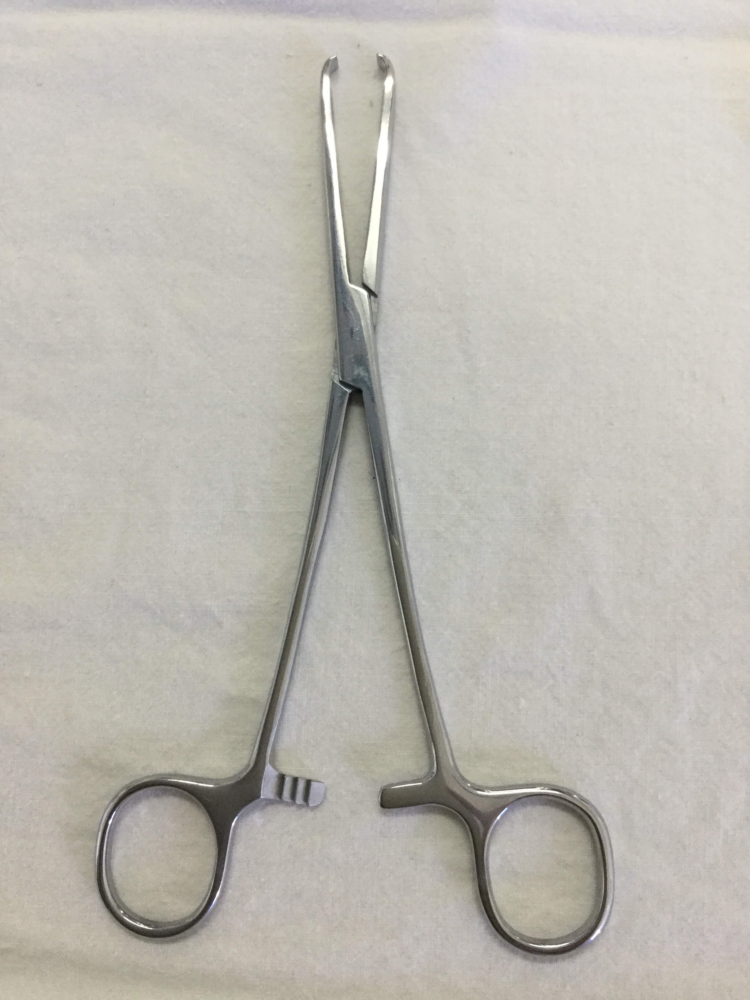
参考：
https://en.wikipedia.org/wiki/Allis_clamp
Intestinal clamp
用于肠管手术，以阻断肠内容物的移动、溢出或肠壁出血。肠钳结构上的特点是齿槽薄，弹性好，对组织损伤小，使用时需外套乳胶管，以减少对组织的损伤
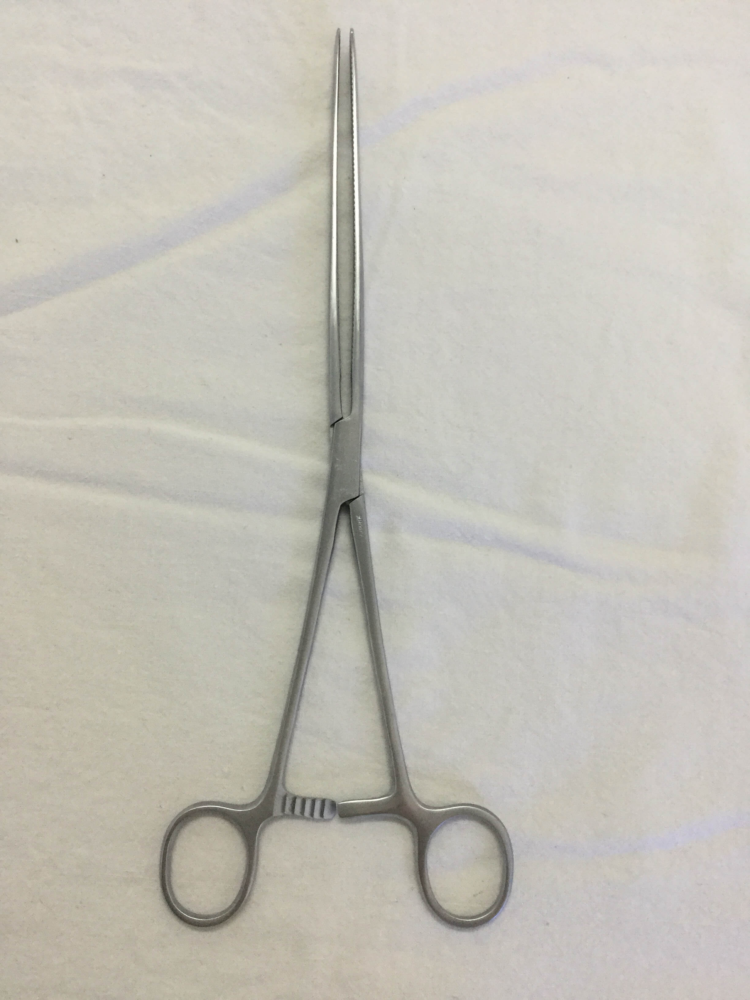
参考：
https://baike.baidu.com/item/%E8%82%A0%E9%92%B3
Babcock forceps
用于夹持肠腔、阑尾、软组织、输尿管和血管等
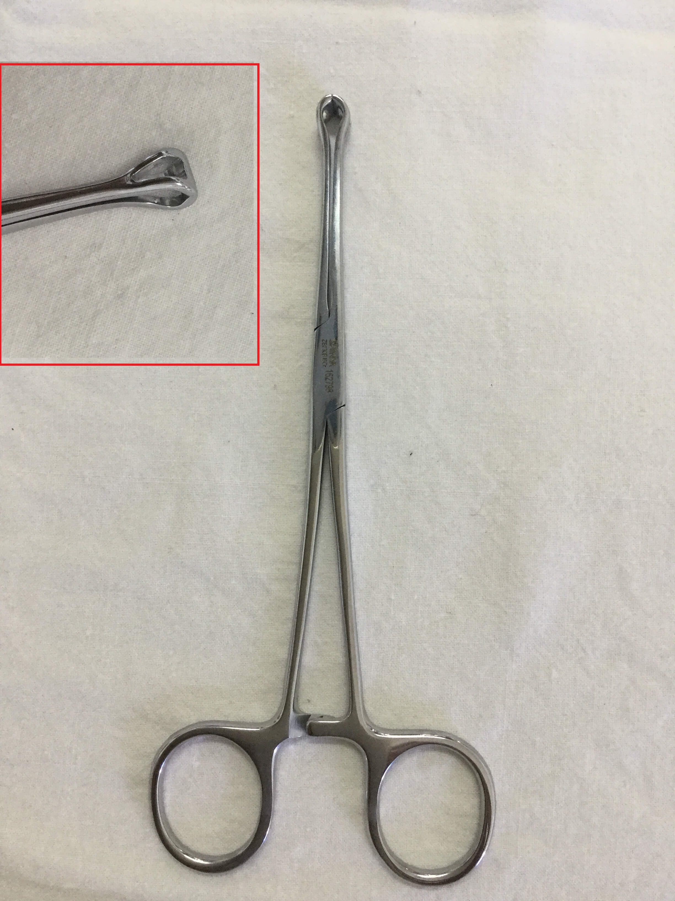
参考：
张其本编著. 子宫颈癌手术学 第2版. 北京：人民卫生出版社, 1992.01.
Towel Clamps、Towel forceps
用于固定铺盖于手术切口周围的手术巾，有时也用来牵拉骨或其他坚韧组织
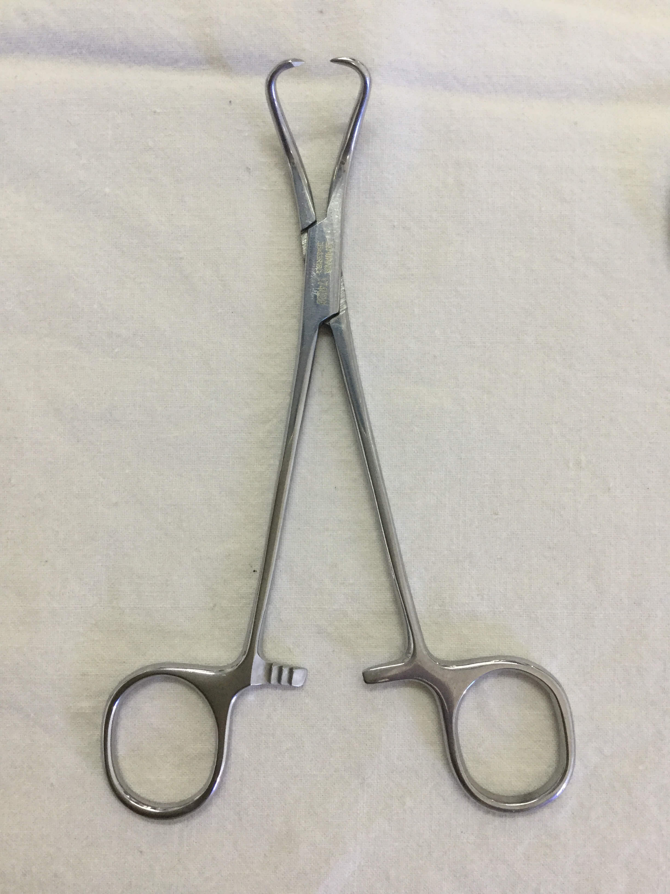
参考：
http://www.baike.com/wiki/%E5%B8%83%E5%B7%BE%E9%92%B3&prd=so_1_doc
这两个器械用于钳取石头，所以下面没有锁扣，二者的主要区别在于其尖端的孔，胆石钳的孔近似圆形，肾石钳的孔近似长方形
gallstone forceps
夹取胆道内结石用
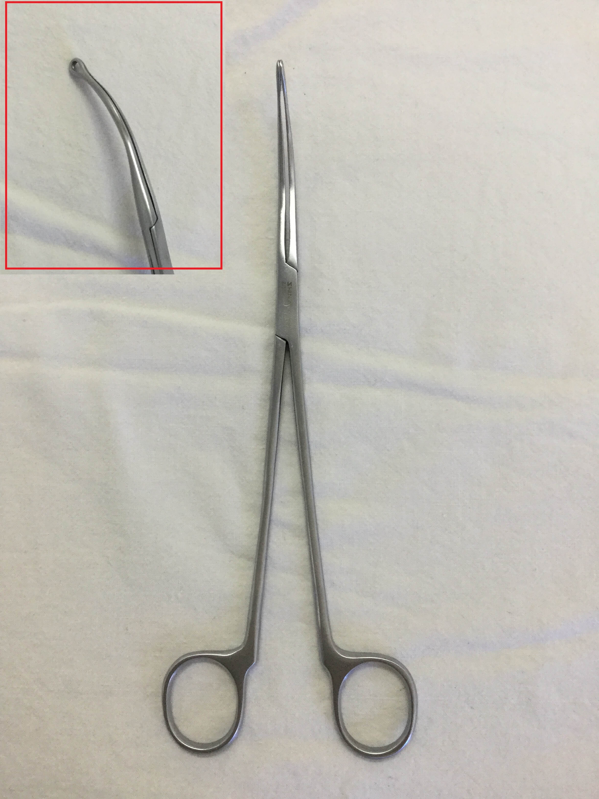
kidney stone forceps
肾孟内钳取结石用
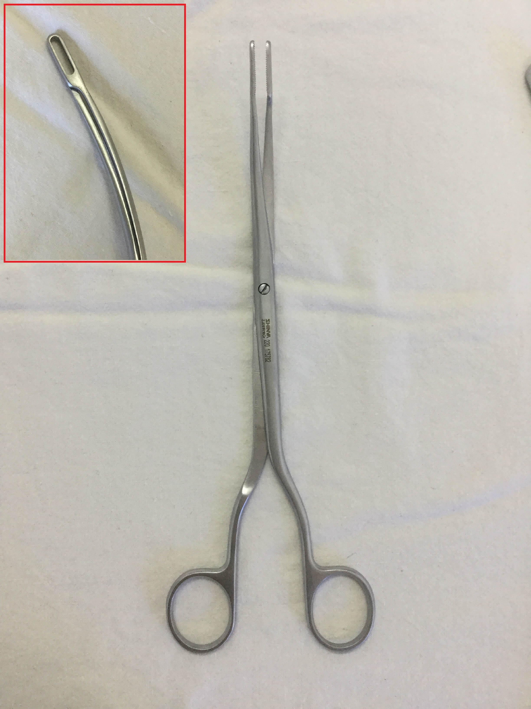
sponge holding forceps, sponge forceps, ring forceps, sponge stick
分有齿和无齿两种
我们见到的是直无齿和弯有齿的
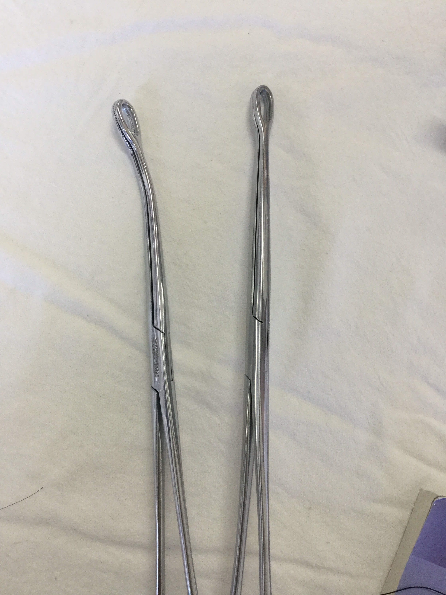
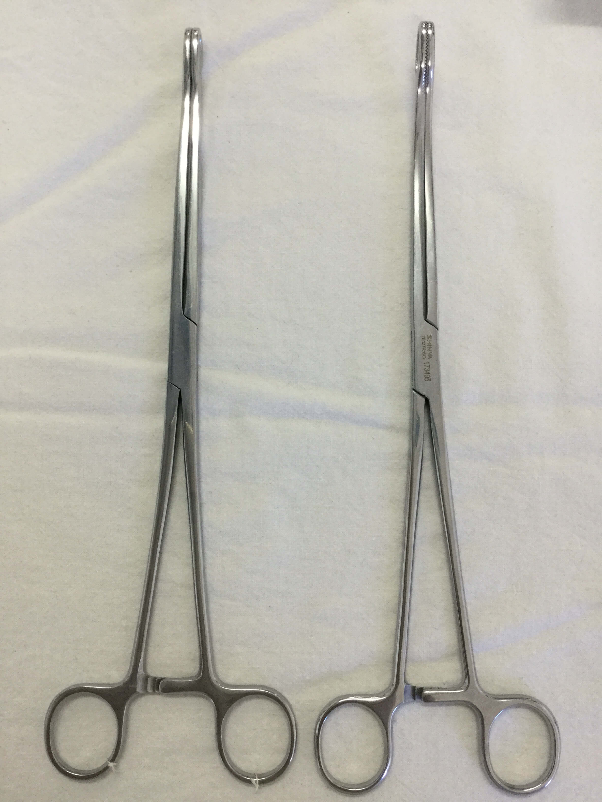
参考：
马跃美. 外科手术学基础.第2版[M]. 人民卫生出版社, 2011.
scalpel, lancet
手术刀分刀片和刀柄。刀片是一次性的，刀柄不是，手术刀用于切割组织，刀柄用于钝性分离，拆装刀片宜用持针器或血管钳夹持，以免割伤手指。
常用的刀柄有3号、4号和7号三种。刀片有圆、尖、弯刃及大小之分，一般随手术需要及个人习惯选用。
持刀姿势一般分为四种：
（1） 指压式（抓持式）：用于切开较韧的组织如作皮肤与肌腱的切开，动作涉及整个上肢，力量主要在腕部。
（2） 持弓式：用于用较轻力量较快地切开松软组织，如腹膜后组织的剥离，动作主要涉及腕部，力量在手指。
（3） 执笔式：用于小力量短距离的精细操作，如解剖血管、神经，其动作和力量主要都在手指。
（4） 挑起式：用于向上挑开，以免伤及深部组织，如挑开浅表脓肿或做气管切开时挑开气管软骨环。
图为3号手术刀柄
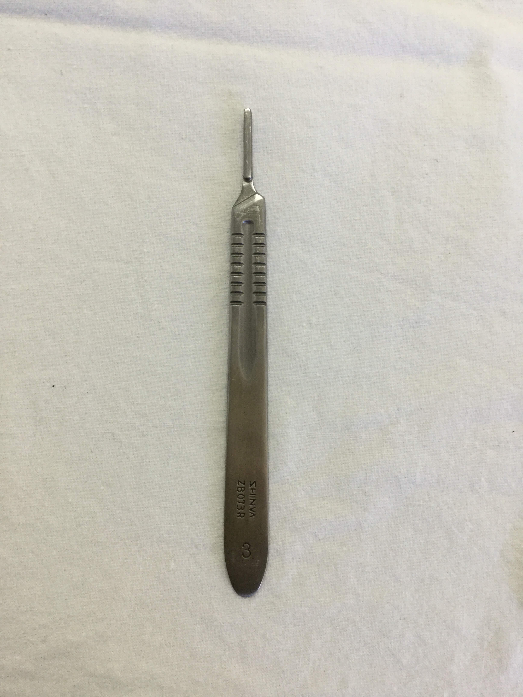
参考：
http://netclass.csu.edu.cn/jpkc2006/xiaoji2006/shoushuxue/jxdg/jxdg2.html
Kocher forceps, Kocher hemostatic forceps
尖端有锐齿(，可用于钳夹较厚的组织而不易滑脱，现多用于胃肠道手术中钳夹将要被切除的胃肠壁，而不用于止血，注意与爱丽丝钳的区别。
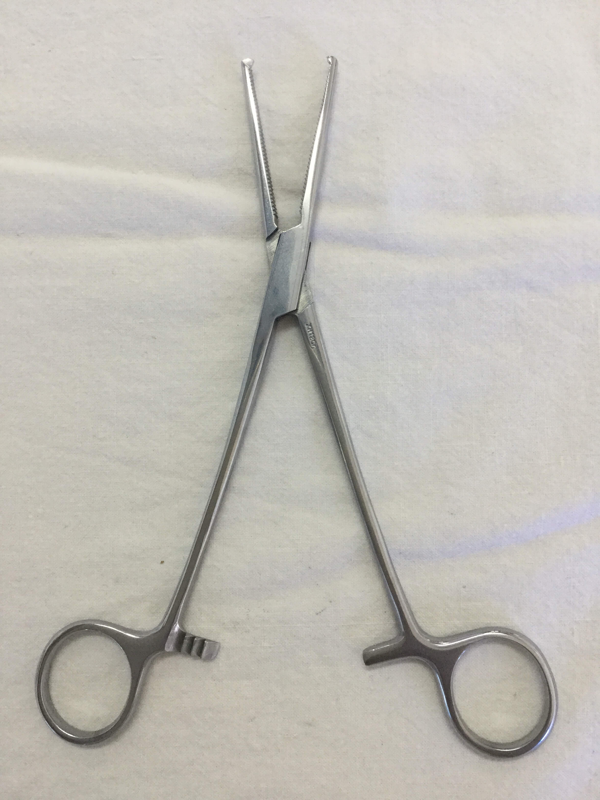
用左手时的松钳方法，拇指及食指持一柄环，第三、四指顶住另一柄环，二者相对用力即可松开（见P32图1-1-7（2））
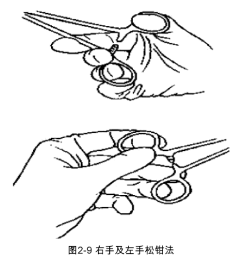
参考：
马跃美. 外科手术学基础.第2版[M]. 人民卫生出版社, 2011.
史兴山. 宠物外科手术技术[M]. 中国轻工业出版社, 2014.
- forceps
- smooth forceps（无齿镊，平镊，组织镊）
- teeth forceps（有齿镊，外科镊，皮肤镊，敷料镊）
无齿镊，其尖端无钩齿，用于夹持脆弱的组织、脏器及敷料
有齿镊，因尖端有钩齿、夹持牢固，但对组织有一定损伤。
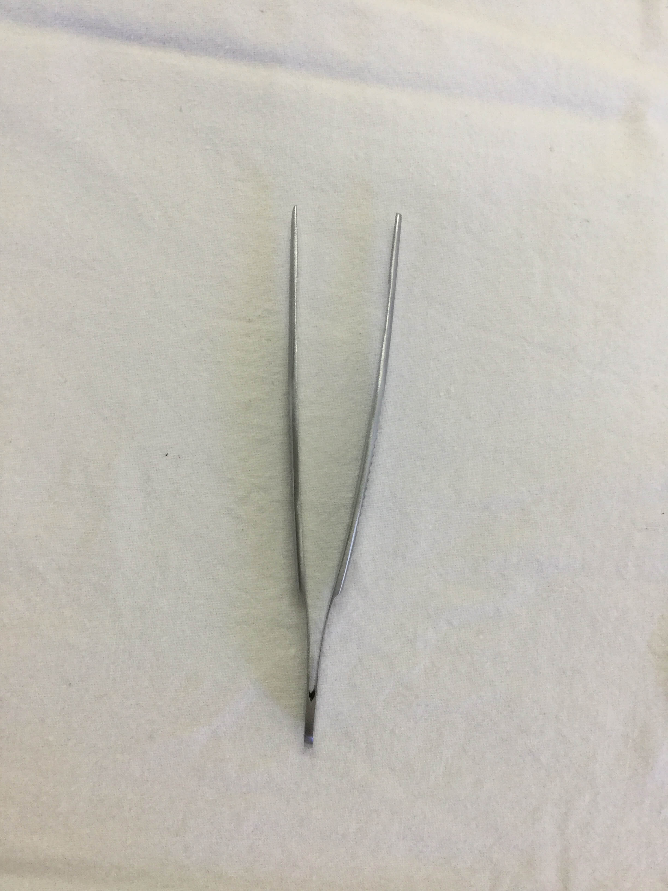
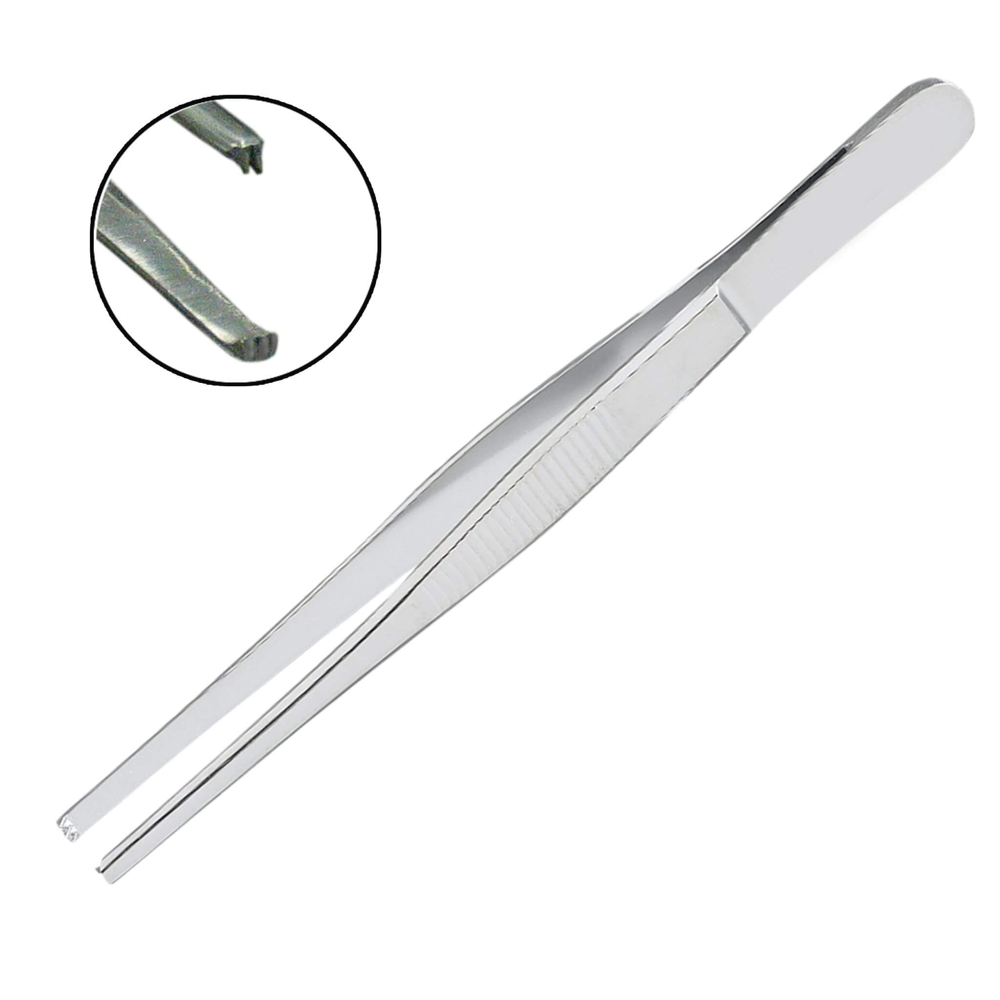
使用位，拇指对食指和中指，这样操作方便而灵活。
携带位，有两种
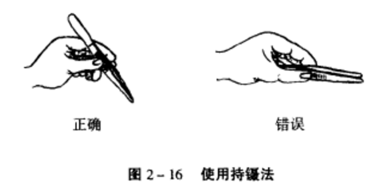
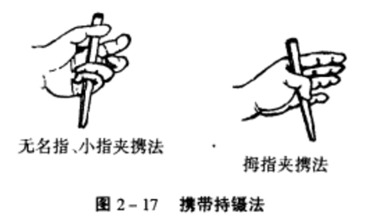
参考：
马跃美. 外科手术学基础.第2版[M]. 人民卫生出版社, 2011.
郑兴东. 外科手术学基础.[M].第二军医大学出版社, 2011.
易光华. 外科实习指导.[M].江西科学技术出版社, 2003.
https://cdn.shopify.com/s/files/1/0281/1302/products/2x3_tissue_forceps.jpg?v=1469038647